![]()
| Taxa | Morni | Chail | Churdhar | Total |
|---|---|---|---|---|
| Species | 696 | 438 | 616 | 1385 |
| Genus | 471 | 322 | 346 | 748 |
| Family | 109 | 106 | 99 | 145 |
| Introduced | 120 | 45 | 16 | 142 |
| Native | 576 | 393 | 600 | 1243 |
Exploring Elevational Patterns of Plant Species Richness: Insights from Western Himalayas
Abstract
Understanding the patterns and drivers of species richness along elevational gradients is crucial for biogeographical, conservation and ecological research. This study aims to investigate the plant species richness across three sites at different elevations, examine the elevational patterns of species richness, compare the observed species richness with predictions of the mid-domain effect (MDE) null model, and assess the elevational pattern of residual species richness. We prepared a comprehensive database of elevational distribution of plant species occurring at selected sites by combining information from field visit and published literature. We used rigorous statistical analyses and null model simulations to elucidate species richness patterns along elevational gradients. Our study revealed substantial differences in plant species richness across the three study sites. While higher elevation site displayed a consistent decline in species richness with increasing elevation, others at lower and intermediate elevations exhibited a complex non-linear pattern. The entire elevational gradient demonstrated a non-linear unimodal pattern, with peak richness occurring around intermediate elevations. Further, the observed patterns showed deviations of varying magnitude and these deviations exhibited consistent non-linear relationship with elevation. These observations indicate that factors beyond the range constraints play a significant role in shaping species richness patterns along elevational gradients. Understanding these factors can aid in predicting and managing the impacts of ongoing environmental changes on elevational biodiversity. In conclusion, this study provides a comprehensive assessment of elevational patterns of plant species richness. By unravelling these patterns and investigating their underlying ecological drivers, we enhance our understanding of biodiversity dynamics along elevational gradients. This knowledge is crucial for informing effective conservation strategies and promoting the preservation of plant diversity in a rapidly changing world.
Keywords: elevational gradients, species richness, mid-domain effect, residual species richness, western Himalaya, Morni Hills, Chail WLS, Churdhar WLS
Introduction
More than two million living species have been scientifically documented so far and many more yet to be discovered (Bánki et al., 2023). This enormous biodiversity is unevenly distributed on the planet and mountains harbour unusually higher number of species than any other terrestrial region (Rahbek et al., 2019). Even within mountain ranges, species number shows striking variation as one moves from valleys to mountaintops (Guo et al., 2013; Rahbek, 1995). The change in number and diversity of species along a gradient of elevation has been referred as the elevational patterns of species richness. This field of research explores how species richness varies as one moves up or down a mountain or hillside. The distribution of species along elevational gradients has long intrigued ecologists (Lomolino, 2001) and remains a topic of active research in the fields of biogeography, conservation and ecology (Guo et al., 2013; Lomolino, 2001; Rahbek, 1995). Understanding these patterns is essential for unravelling the factors that shape biodiversity and ecological processes in different ecosystems.
For a long time, it was believed that elevational gradients are mere reflections of latitudinal gradients (Humboldt & Bonpland, 1805; Stevens, 1992) and the number of species (species richness) decreases monotonically towards mountain tops (Lomolino, 2001; Rahbek, 1995). However, this decreasing pattern was challenged during late 20th century and a unimodal (hump-shaped) pattern was suggested to be more common than the monotonic decline (Rahbek, 1995, 2005). During past decades, numerous studies investigated the elevational patterns of species richness for different taxa and diverse mountain ranges (Guo et al., 2013; McCain & Grytnes, 2010; Rahbek, 1995). These studies frequently documented a unimodal relationship between elevation and species richness for a range of taxa (McCain & Grytnes, 2010) and it is widespread among many plant taxa (Guo et al., 2013; McCain & Grytnes, 2010; Rahbek, 2005). However, the relationship between elevation and species richness varied considerably, with some studies finding a decreasing pattern (Bisht et al., 2022; Trigas, Panitsa, & Tsiftsis, 2013), a plateau (Kessler, Kluge, Hemp, & Ohlemüller, 2011), or even an increase (Kessler et al., 2011; Vetaas & Grytnes, 2002) in species richness. While many taxa showed consistent unimodal elevational patterns, some taxa like birds (McCain, 2009) and ferns (Kessler et al., 2011) showed highly variable patterns of elevational species richness. The highly variable relationship between elevation and species richness indicates that the elevational patterns are not fully documented and understood yet. Therefore, there is still a scope to explore the elevational patterns of species richness for different taxa and mountain ranges (Guo et al., 2013; Lomolino, 2001).
While multiple biological, ecological and historical processes can shape elevational patterns of species richness (Gaston, 2000; McCain & Grytnes, 2010), simple geometric constraints can also produce a unimodal pattern of species richness (Colwell & Lees, 2000; Colwell, Rahbek, & Gotelli, 2004). If random species with varying distribution ranges are placed in bounded domains, more species will overlap near the centre of the domains than the edges of the domains. Thus, a unimodal pattern of species richness can be achieved by solely due to random placement of species ranges (Colwell & Lees, 2000). This observation of richness peaks at intermediate elevations simply due to geometric constraints has been referred as the mid-domain effect (MDE). The prediction of MDE has been used as a null model because it operates solely due to random processes and did not consider any abiotic or biotic gradient (Colwell et al., 2004; Vetaas & Grytnes, 2002). Available literature indicates variable agreement between observed species richness and the MDE predictions (Colwell et al., 2004; R. R. Dunn, McCain, & Sanders, 2007), suggesting the influence of factors other than range constants in shaping the elevational patterns of species richness.
Understanding the elevational patterns of species distributions is a pre-requisite for identification of high diversity areas and has important implications for conservation and sustainability of fragile mountain ecosystems like Himalayas. Additionally, studying elevational patterns can inform conservation strategies in the face of ongoing environmental changes, such as climate change, which are expected to have profound effects on mountain ecosystems (Rahbek et al., 2019; Steinbauer et al., 2018). While many studies explored elevational patterns of plant species richness in central and eastern Himalayas (Bhattarai, Vetaas, & Grytnes, 2004; Grau, Grytnes, & Birks, 2007; Grytnes & Vetaas, 2002; Qian, Kessler, & Vetaas, 2022; Rana, Gross, & Price, 2019; Vetaas & Grytnes, 2002), studies in Western Himalayas remained limited (Bisht et al., 2022; Chawla et al., 2008; Oommen & Shanker, 2005). Through our research, we aspire to contribute to the broader understanding of biogeography, macroecology and conservation in the Western Himalayas. Therefore, the present analysis focused three protected areas, representing a large elevational gradient of 300–3600 m above mean sea level in Western Himalayas. By combining information from literature survey and published data, we seek to contribute to the growing body of research on elevational patterns of plant species richness in Western Himalayas. Specifically, the present study aims to (1) compare the plant species richness among different sites, (2) investigate the patterns of plant species richness across different elevational gradients, (3) compare the observed species richness with predictions of mid-domain effect null model across different elevational gradients, and (4) explore the elevational pattern of residual species richness (observed - predicted species richness). Our findings will contribute to enhance our understanding of the elevational patterns of plant species richness. Further, this knowledge can be used to inform conservation and management efforts, and to help us predict how plant communities will respond to future climate change.
Methodology
Study sites
Western Himalayas represent the prominent mountain ranges spanning over the Jammu & Kashmir, Himachal Pradesh, Uttarakhand and parts of Punjab and Haryana in India. The present study focused on a combination of protected areas (wildlife sanctuaries) and their adjoining forested landscapes within the Western Himalayas. Specifically, we selected the Morni Hills (including Khol Hi-Raitan Wildlife Sanctuary), Chail Wildlife Sanctuary, and Churdhar Wildlife Sanctuary of Western Himalayas based on their ecological significance and accessibility. The Morni Hills (300–1500 m) is located in the the Panchkula district of Haryana, Chail WLS (900–2100 m) is shared by Solan and Shimla district of Himachal Pradesh, and Churdhar WLS (1600–3600 m) is shared by Sirmaur and Shimla districts of Himachal Pradesh (Figure 1). Overall, these three sites provided a wider elevational gradient ranging from 300 m in the lower foothills to over 3600 m at the Churdhar Peak. The diverse ecological zones and topographic variation of these sites offered us an ideal setting to investigate the elevational patterns of plant species richness in Western Himalayas.
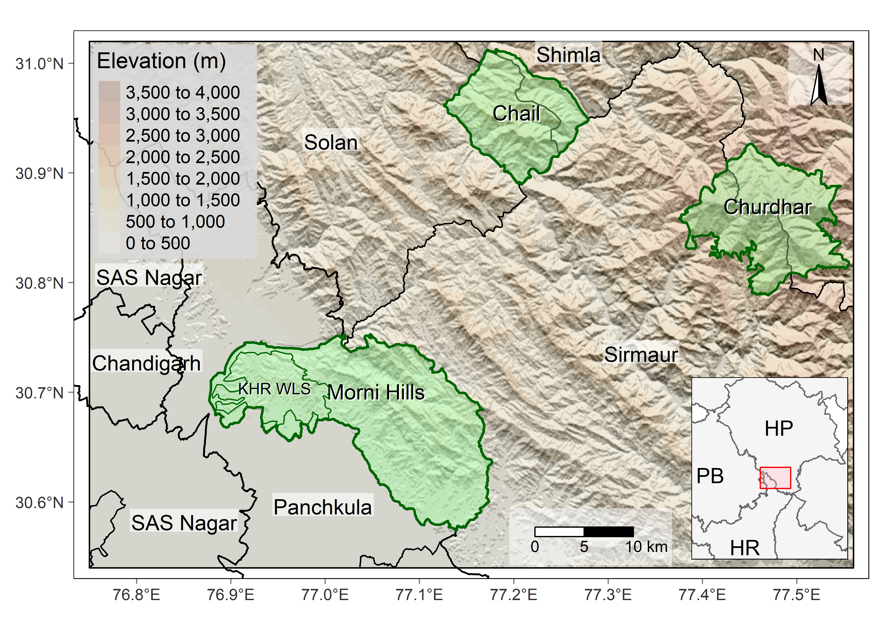
The selected study areas exhibit substantial variations in climate conditions due to large variations in elevation and topography (Figure 2). Generally, the climate can be divided into three seasons, i.e., summer, monsoon, and winters. The climate varies from hot semi-arid (BSh) at foothills to monsoonal warm-summer humid continental climate (Dwb) near the Chur Peak. The Morni Hills represent the hot semi-arid (BSh) to monsoonal dry-winter humid subtropical climates (Cwa), the Chail WLS represent the monsoonal humid subtropical climate (Cwa) to monsoonal dry-winter subtropical highland climate (Cwb), and the the Churdhar WLS represent the monsoonal dry-winter subtropical highland climate (Cwb) to monsoonal warm-summer humid continental climate (Dwb) near the Chur Peak (Beck et al., 2018).
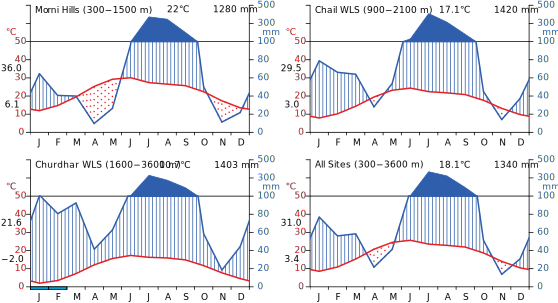
The Morni Hills (300–1500 m) harbours the tropical mixed dry deciduous forests at lower elevations and Siwalik Chir Pine forests at higher elevations. The Chail WLS (900–2100 m) comprise of subtropical Pine forests at lower elevations, followed by Oak forests and moist Deodar forests at higher elevations with occasional presence of Blue Pines. The Churdhar WLS (1600–3600) encompasses mixed coniferous forests at lower elevations followed by Kharsu Oak forests and alpine pastures at higher elevations (Champion & Seth, 1968). Thus, these sites represent a diverse range of plant communities, ranging from temperate forests of oak and rhododendron to alpine meadows adorned with vibrant wild-flowers. These diverse forests are home to some Endangered (Aconitum heterophyllum, Angelica glauca, Cypripedium himalaicum, Dactylorhiza hatagirea, Picrorhiza kurroa, Taxus wallichiana and Trillium govanianum), Vulnerable (Cypripedium cordigerum, Malaxis muscifera and Paris polyphylla), and Near Threatened (Abies spectabilis) vascular plants according to the recent assessment (IUCN, 2023). Similarly, numerous endemic wild animals like Himalayan musk deer and Himalayan brown bear thrive in the study areas. The Chail WLS and Churdhar WLS are included in the Important Bird and Biodiversity Areas of the BirdLife International (Rahmani, Islam, & Kasambe, 2016) and provide home to some threatened birds including the Cheer Pheasant (Catreus wallichii), Himalayan Monal (Lophophorus impejanus), Indian Vulture (Gyps indicus), Koklass Pheasant (Pucrasia macrolopha), Red-headed Vulture (Sarcogyps calvus), and White-rumped Vulture (Gyps bengalensis).
Species check-list
A comprehensive species check-list was compiled for each site by combining the information gathered from field surveys and literature surveys. We conducted 2-4 field visits of each site during 2018–2022 and recorded the identifiable plant species encountered on the treks followed by us. Unknown plants were photographed and identified in the lab with the help of literature and herbarium (PAN) of the Panjab University, Chandigarh and Janaki Ammal Herbarium (RRLH) of Indian Institute of Integrative Medicine, Jammu. On-line resources like eFlora of India and Flowers of India were also consulted for plant species identification (eFI, 2023; FOI, 2023). Further, we conducted a systematic literature survey to identify the previously reported plant species from the selected sites. Google Scholar was chosen for identification of relevant studies for two reasons. First, it can retrieve the most obscure sources including studies published in local publication outlets and technical reports. Second, it can search within the full-text of available articles. Considering these advantages, we searched Google Scholar using the “Morni”, “Chail” and “Churdhar” as keywords during September 2021 and the search was again updated during August 2022. We recorded all the plant species reported from the identified accessible studies for each selected site. To prepare a complete check-list of reported plant species for all the sites, we updated our check-list by adding plant species that were collected and reported by earlier studies for Morni Hills (Balkrishna, Joshi, Srivastava, & Shukla, 2018; Balkrishna, Srivastava, Shukla, Mishra, & Joshi, 2018; Dhiman, Saharan, & Jakhar, 2020, 2021; Singh & Vashistha, 2014), Chail Wildlife Sanctuary (Bhardwaj, 2017; Bhardwaj, Verma, Rana, Thakur, & Verma, 2014; Kumar, 2013), and Churdhar Wildlife Sanctuary (A. K. Choudhary, Punam, Sharma, & Chandel, 2007; R. K. Choudhary & Lee, 2012; Gupta, 1998; Radha et al., 2019; Subramani, Kapoor, & Goraya, 2014; Thakur, Bisht, Kumar, & Kumar, 2021).
The World Checklist of Vascular Plants (WCVP) was followed for standardisation of all the botanical names and their authorities (Govaerts, Lughadha, Black, Turner, & Paton, 2021). It is based on the International Plant Names Index (IPNI) and managed by the taxonomic experts at the Royal Botanic Gardens, Kew. It is considered superior to the traditionally used The Plant List (TPL v1.1) because it is expert reviewed and most importantly follows the International Code of Nomenclature (Turland et al., 2018). Further, the WCVP follows the Angiosperm Phylogeny Group IV (APG IV) system of botanical classification (Angiosperm Phylogeny Group et al., 2016). The WCVP database is updated daily and serves as a taxonomic backbone for the Plants of the World Online (POWO, 2022). We manually screened and standardised each record of plant species using the Plants of World Online (https://powo.science.kew.org/) portal during 2021–2022 (POWO, 2022). All records of taxonomic names were updated by assigning the recently accepted names including the spelling variants and botanical authorities (POWO, 2022). We generally accepted the infra-specific taxa (variety and subspecies) as species for the present analysis to maintain harmony among the taxa. Further, we recorded the distribution of each plant from the POWO (2022) and excluded all those taxa whose distribution was found outside of India for Morni Hills and outside of Western Himalaya for Chail WLS and Churdhar WLS. We manually corrected known distribution of some species (Bauhinia variegata as Introduced to Himalayas but Native to India). Recently, we updated the plant names and their families by matching with a static copy of WCVP (version 10 dated 27 October 2022) using the package rWCVP version 1.2.4 (Brown et al., 2023).
Distribution ranges
The elevational distribution of each catalogued species was recorded from the recently compiled Database of Vascular Plants of Himalaya published on GBIF (Rana & Rawat, 2017, 2019). This dataset consist of more than 10,500 plant species compiled from published floras for the Himalayan region (Rana & Rawat, 2017, 2019). It included over 3,300 plant species from Himachal Pradesh with elevational distribution for about 3,000 species from the published floras (Chowdhery & Wadhwa, 1984; Collett, 1902; Duthie, 1903–1915). We accessed this dataset on 6 August 2022 through GBIF using the package rgbif version 3.7.7 (Chamberlain et al., 2023). The plant names provided the authors of this dataset were standardised by matching with a static copy of WCVP (version 10 dated 27 October 2022) using the package rWCVP version 1.2.4 (Brown et al., 2023). We filtered the elevational distribution of plants in the state of Himachal Pradesh and then, joined these elevational distributions to our plant check-list. This procedure provided elevational distribution for more than 1,000 plants. Similarly, elevational data for about 10 species was extracted from another published study (Rana, Price, & Qian, 2019). We excluded the remaining species (n = 228) whose elevational data was either not available or uncertain to us. Next, we manually screened the elevational data for each species. In case of duplicates, we considered maximum value for upper limit and minimum value for lower limit (Rana, Price, et al., 2019). Further, we preferred the data from Himachal Pradesh over the neighbouring states or the entire Himalayas because our sites broadly falls under this Indian state. However, some species had their elevational distribution extending beyond the elevational range (300–3,600 m) of our sites. Therefore, we adjusted the minimum lower limit of distribution to the minimum elevation of study site, minimum upper limit of distribution to the minimum elevation of study site plus 100 m and maximum upper limit of distribution to maximum elevation of study site rounded to nearest hundred. Thus, the elevational distribution limits represented the ‘soft boundaries’ for each site (Colwell & Hurtt, 1994).
Species richness
Firstly, we re-sampled the elevation to 30 arc-sec (~1 km) raster with bilinear interpolation using the resample() function from the terra package version 1.7.29 (Hijmans, 2023). This re-sampling updated the elevational extents of Morni Hills (300–1300 m), Chail WLS (900–2100 m), Churdhar WLS (1600–3400 m) and All Sites (300–3400 m). To estimate species richness at different elevations, we divided each elevational gradient into 100-m elevational bands for each site. Such 100-m elevational bands have been previously used to study the elevational patterns of species richness in plants (Li et al., 2022; Qian et al., 2022; Rana, Price, et al., 2019). Thus, the species richness was estimated in 10 bands for Morni Hills, 12 bands for Chail WLS, 18 bands for Churdhar WLS, and 31 bands for All Sites combined. Each elevational band is represent by the upper elevational limit in both text and figures. To estimate the species richness for each elevational band, we used the range interpolation approach assuming that each species can be found everywhere between its elevational range (Grytnes & Vetaas, 2002). The range interpolation method have been widely used to study the elevational patterns of plant species richness (Hu et al., 2016; Manish et al., 2017; Rana, Price, et al., 2019). Although this approach can introduce bias in estimation of species richness (Hu et al., 2016), it is commonly applied for compensating the sampling problems and overall methodological consistency. Therefore, we assigned each species to all elevational bands occurring wholly or partly within its known elevational range (Grytnes & Vetaas, 2002; Qian et al., 2022; Rana, Price, et al., 2019). Then, the species richness was estimated as the total number of species present in each 100-m elevational band. Since this species richness correspond to the whole elevational band, it represents the \(\gamma\)-diversity for each elevational band (Lomolino, 2001).
Data analysis
Firstly, we aimed to compare species richness per 100-m elevational band across selected sites at different elevations. Since the number of 100-m elevational bands varied in our selected sites, we suspected substantial deviations from the assumptions of parametric test. Therefore, we assessed the assumptions of normality and homogeneity of variance for species richness before comparing mean species richness among selected sites. The Levene’s test indicated that species richness had significantly different variances among the selected sites (F3,67 = 11.33, p < 0.001). Since our data did not meet the assumption of homogeneity of variances, we used the Welch’s one way analysis of variance (Welch, 1951) to compare the mean species richness per 100-m elevational band across the sites. Next, we conducted the Games-Howell post hoc test (Games & Howell, 1976) to assess the differences between all unique pairwise comparisons. The Games-Howell post hoc test has been recommended for pairwise comparison of samples with unequal sample size and variances (Ruxton & Beauchamp, 2008). We implemented these statistical tests in R statistical environment version 4.3.0 (R Core Team, 2023) using the R package rstatix version 0.7.2 (Kassambara, 2023).
Secondly, we aimed to explore the elevational patterns of plant species richness in Western Himalayas. A generalised linear model (GLM) was used to examine the relationship between plant species richness as response variable and elevation as predictor variable. The GLM framework allows to accommodate data with non-normal error distributions, model non-linear relationships, incorporate multiple predictors, and provide statistical inference (Hilbe, 2014). Our response variable, plant species richness, was defined as the count of unique plant species observed within predefined elevation bands. We chose to use a Poisson distribution within the GLM due to the discrete and non-negative nature of our response variable. Additionally, the Poisson distribution is commonly used when modelling count data, as it accounts for the inherent heterogeneity and overdispersion observed in such discrete data (Hilbe, 2014). Therefore, we used the GLM framework with a Poisson distribution and logarithmic-link function, which ensures that the fitted values are always non-negative. The GLMs were implemented using the glm() function from the stats package in R programming environment version 4.3.0 (R Core Team, 2023).
We initially assessed the relationship between elevation and plant species richness using a scatter plot and calculated the Pearson’s correlation coefficient to explore the strength and direction of the association (Figure 8). To account for unimodal or non-linear relationship between species richness and elevation (Guo et al., 2013; Rahbek, 1995), we included polynomial terms for elevation of up-to fifth degree as predictors (Equation 1).
\[ S \sim Elev + Elev^2 + Elev^3 + Elev^4 + Elev^5 \tag{1}\]
We followed a forward model selection approach (Table 5) and evaluated total six models starting from an intercept only null model (zero degree) to a full model with fifth degree polynomial elevation as predictor variables (Equation 1). We measured the lack of fit of the model by calculating the Deviance (D), which is the deviance of the fitted model from the perfectly saturated model (Table 5). The Deviance (D) of a model is defined as the twice of the maximum log-likelihood (\(\mathcal{L}\)) of the model. Although there is no true \(R^2\) statistic for GLMs, the pseudo-\(R^2\) or the deviance-squared (\(D^2\)) of the model can be estimated by Equation 2:
\[ D^2 = \frac{D_{null} - D_{resid}}{D_{null}}; \quad D^2_{adj} = 1 - \frac{(1 - D^2) \times (n-1)}{n - k - 1} \tag{2}\]
where the \(D_{null}\) is the Deviance of null model (model with only an intercept) and the \(D_{resid}\) is the Deviance of the model under study (saturated model). Thus, a smaller value of \(D_{resid}\) will have higher explanatory power and therefore, better will be the model. However, smaller sample size can bias the deviance-squared, therefore we adjusted the deviance-squared by applying a correction for small sample size (Equation 2). Additionally, we assessed the dispersion parameter (\(\phi\)) since heterogeneous ecological data often have higher variance than the mean value of response (overdispersion) violating the assumption of Poisson GLM (Table 5). If there is overdispersion, then the quantity \(D/\phi\) will follow a \(\chi^2\) distribution with \(n - k\) degrees of freedom and the estimator for \(\phi\) will be:
\[ \phi = \frac{D}{n - k} \tag{3}\]
where, \(D\) is the residual deviance, \(n\) is the total number of observations (sample size) and \(k\) is the number of unknown parameters (predictors) in the fitted model. If the estimated values of \(\phi\) in Equation 3 are close to 1, we can assume that there is little or no overdispersion (Hilbe, 2014).
We used the information theory based model selection criteria to identify the best model from candidate models (Table 5). Akaike’s Information Criterion (AIC) has been most commonly used for model comparison in ecology and evolution (Johnson & Omland, 2004). However, it can bias model comparison when sample size is small in comparison to the number of estimated parameters (Burnham & Anderson, 2002). Therefore, we corrected the AIC by applying a sample size correction suggested by Hurvich & Tsai (1989), which can be mathematically represented by the Equation 4:
\[ AIC = -2 \mathcal{L} + 2k; \quad AICc = AIC + \frac{2k(k+1)}{n-k-1} \tag{4}\]
where, \(k\) is the number of parameters to be estimated by model and \(n\) is the total number of response observations in the model. The model with lowest AICc value was considered as best model and models with a difference of two AICc units were considered equally competitive (Burnham & Anderson, 2002). Since our model are nested, we statistically compared the larger (more predictors) models with smaller (less predictors) models using a Deviance-based Chi-squared test, also known as the likelihood ratio test (Table 5). A significant p-value (i.e., p < 0.05) suggests significant improvement in model fit when additional predictors were included, i.e., larger model is better than the smaller model.
Once the models were selected, a thorough evaluation of their performance was conducted to ensure the validity of the findings. Model evaluation involved assessing the assumptions of the selected models and diagnosing potential issues. We used simulated residuals (n = 1000) to visually assess model fit by plotting residuals against the model predictions (P. K. Dunn & Smyth, 1996). Then, the model was validated by analysing the dispersion and distributional assumptions of the fitted model. The simulated residuals from the defined distribution were tested against the residuals of the fitted model. Specifically, the uniformity was tested using the Kolmogorov-Smirnov (KS) test, dispersion was tested using the simulation-based dispersion test and outliers were tested by generating a simulation-based expectation for the outliers using the bootstrapping. If the dispersion test indicated significant over-/under-dispersion, we assessed the variance of of observed raw residuals against the variance of simulated residuals. The deviations in the model residuals were visually assessed by plotting the simulation-based residuals against the model predictions. This residual analysis and model validation was implemented using the simulateResiduals() function from the DHARMa package version 0.4.6 (Hartig, 2022). Additionally, we performed the Deviance-based Chi-squared goodness-of-fit test to assess the overall goodness-of-fit of the selected model. A non-significant p-value indicates that there is no significant difference between the predictions of the model and observed data, i.e., the data is adequately fitted to the model. After assessment of goodness-of-fit for the selected models, we used Wald’s test to assess the significance of estimated regression coefficients.
Our third aim was to compare the observed species richness with predictions of a null model. A null model predicts the observed patterns solely due to operation of random processes (Gotelli et al., 2009). The geometric constraint hypothesis or the mid-domain effect is a commonly used null model to evaluate species richness patterns (Colwell & Hurtt, 1994; Grytnes & Vetaas, 2002). This hypothesis predicts that the species richness patterns emerge from random distribution of species ranges. The elevational range of a species is defined as the difference between the highest and lowest elevation of its geographical distribution and the elevational midpoint as the mean of these two limits (Stevens, 1992). We randomly generated elevational ranges equal to number of species in each site. The elevational ranges were generated by defining the geometric constraints of boundaries i.e., the lower and upper elevational limits corresponding to each study site (Box 2 in Colwell & Lees, 2000). These elevational limits were re-arranged so that the lower value should represent the lower limit whereas the higher value should represent the upper limit of elevational range. Then, the species richness was calculated by assuming that the species is continuously present within its elevational range. Next, we calculated species richness in each 100-m elevational band starting from minimum elevation to maximum elevation. This process was repeated 10,000 times to estimate the minimum, maximum, mean species richness and associated standard deviation for each elevational band. The mean species richness (Snull) predicted by this null model was compared with the observed species richness (S). We used linear regression analysis to compare the strength of association between observed species richness and predictions of null models. If the observed species richness are well agreed with predictions of null model, then the slope value should be close to one.
Finally, we estimated the residual species richness (Sres), representing the difference between observed (S) and predicted species richness (Snull) for each 100-m elevational band. The residual species richness (Sres) was calculated by subtracting the predicted species richness (generated by the mid-domain effect null model) from the observed species richness for each 100-m elevational band. Positive residuals indicated higher species richness than expected, while negative residuals indicated lower species richness than expected. We initially assessed the relationship between elevation and residual species richness using a scatter plot and calculated the Pearson’s correlation coefficient to explore the strength and direction of the association (Figure 12). To account for non-linear relationship between residual species richness and elevation, we included quadratic and cubic elevation terms as predictors. Then, we used polynomial linear regression to analysed the elevational pattern of residual species richness (Sres). The goodness-of-fit for the polynomial models was assessed using the adjusted coefficient of determination (R2adj) with higher values indicating better model fit. The significance of estimated regression coefficients was determined using the t-test and p-values less than 0.05 were considered as significant. All analyses were implemented in R statistical environment version 4.3.0 (R Core Team, 2023) and the package tidyverse version 2.0.0 was used for general data wrangling and visualisation (Wickham et al., 2019).
Results
Species richness across sites
Our initial check-list included over 2500 records of plant species across the selected sites. The standardisation of botanical names revealed that over 1000 botanical names were synonyms and we left with about 1400 unique botanical names. Further, screening for distribution showed that only 1385 were found within the study sites. These 1385 species belonged to 748 genera and 145 families (Table 1). According to the POWO (2022) distribution, 1243 species were found to be Native whereas 142 species were Introduced to the region. The distribution of three species differed between India and Western Himalayas. For example, Bauhinia variegata and Impatiens balsamina are Native to India but the distribution of former is Doubtful or Introduced whereas that of latter is Introduced in Western Himalayas. Similarly, Lysimachia arvensis is Native to Western Himalayas but it is Introduced in India.
A total of 696 species belonging to 471 genera and 109 families were recorded from Morni Hills. Among these 696 species, 576 species were Native and 120 species were Introduced. In Chail WLS, a total of 438 species belonging to 322 genera and 109 families were recorded. Among these 438 species, 393 species were Native and 45 species were Introduced. The Churdhar WLS represented a total of 616 species belonging to 346 genera and 99 families. Out of total 616 species, this region had total 600 Native and 16 Introduced species. Among all the selected sites, Morni Hills recorded maximum number of species followed by Churdhar WLS and Chail WLS (Table 1). Similarly, the number of Introduced species were maximum in Morni Hills whereas it was minimum in Churdhar WLS.
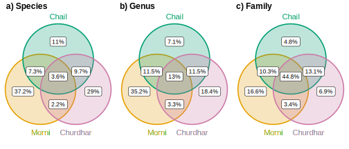
Out of total 1385 species, 50 species were recorded from all the sites. Morni Hills, Chail WLS and Churdhar WLS had 515, 153, and 402 unique species, respectively. The Chail WLS and Churdhar WLS shared highest number of plant species (n = 134), whereas minimum species (n = 30) were shared by Morni Hills and Churdhar WLS (Figure 3 a). Similarly, about 97 genera were common to All Sites and Morni Hills comprised of greatest number of unique plant genera (n = 263) followed by Churdhar WLS (n = 138), whereas Chail WLS had lowest number of unique genera (n = 53). The Chail WLS shared highest number of genera (n = 86) with Morni Hills and Churdhar WLS, whereas only 25 genera were shared by the Morni Hills and Churdhar WLS (Figure 3 b). In terms of families, taxa from 65 families were common to all the sites and Morni Hills represent highest number of unique families. Morni Hills, Chail WLS and Churdhar WLS represented taxa from 24, 7, and 10 families, respectively. Generally, there was high similarity in taxa for Chail WLS and Churdhar WLS, whereas Morni Hills and Churdhar WLS exhibited unique taxonomic composition of plants. Among the families of the recorded species (Table 4), Fabaceae was most dominant with 133 species across All Sites followed by Asteraceae (n = 109), Poaceae (n = 93), Lamiaceae (n = 58) and Rosaceae (n = 43). Family Fabaceae (n = 105) was dominant in Morni Hills whereas family Asteraceae was dominant in Chail WLS (n = 41) and Churdhar WLS (n = 47).
Further, we observed significant differences in plant species richness per 100-m elevational band among the study sites along the elevational gradients (Figure 4). The average species richness per 100-m elevational band was highest for Churdhar WLS (mean = 313.12, SE = 29.58) followed by Morni Hills (mean = 163.30, SE = 17.70) and it was lowest for Chail WLS (mean = 180.92, SE = 8.69). When the data from All Sites was combined the average species richness was rose to 362.84 ± 28.77 per 100-m elevational band. Post-hoc tests revealed that the species richness per elevational band was significantly higher in Churdhar WLS as compared to Morni Hills (mean difference = 149.82, p < 0.001) and Chail WLS (mean difference = 132.19, p < 0.001). However, the mean species richness was not significantly differed between Morni Hills and Chail WLS (mean difference = 17.62, p = 0.653). The estimated omega squared (\(\omega^2\) = 0.31) indicated that approximately 31% of the total variation in average species richness is attributable to differences among the three study sites.
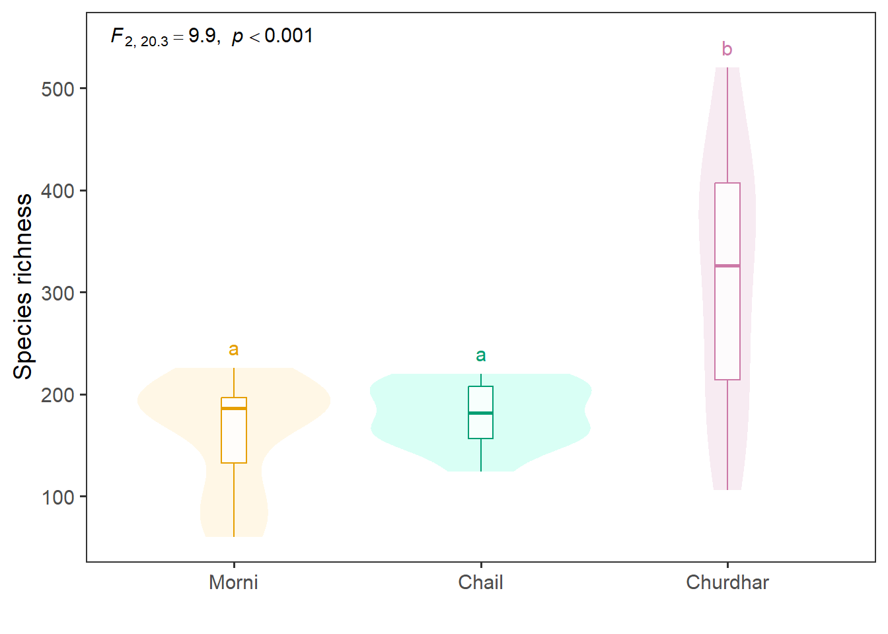
Elevational patterns of species richness
We were not able to retrieve elevational data for all recorded species and therefore, limited further analysis to only those species whose distribution data was available. Thus, our analyses were based on total 1,159 species from All Sites, which included 568 from Morni Hills, 377 from Chail WLS and 561 from Churdhar WLS. Out of the six evaluated candidate models for each site (Table 5), the quadratic model was considered as best model for Chail WLS and Churdhar WLS to describe the elevational patterns. The cubic model was chosen for Morni Hills whereas the quartic (fourth degree polynomial) model was selected for combined All Sites. Although the quadratic and cubic models were equally competitive for Morni Hills, we selected cubic model because it indicated better goodness-of-fit in terms of dispersion and residual diagnostics. Similarly, the quadratic model was chosen over the cubic model for Churdhar WLS due to better model diagnostics for quadratic model than the cubic model (Table 5). These selected models exhibited a good fit to the data as indicated by goodness-of-fit measures (Table 2). The quadratic, cubic and quartic models explained over 90% of total deviance for the selected sites. Additionally, the inspection of model residuals also suggested an adequate model fit as indicated by the QQ-plots (Figure 9) with associated distribution tests and the residual plots to assess the deviation from the distribution assumptions (Figure 10). Although a significant under-dispersion was observed for the All Sites data, the variance of model residuals was not too large than the variance of simulated-residuals (Figure 11).
| Site | Model | D2 | D2adj | \(\phi\) | AICc | Dresid | dfresid | p |
|---|---|---|---|---|---|---|---|---|
| Morni | S ~ Elev + Elev2 + Elev3 | 0.97 | 0.94 | 1.07 | 91.00 | 6.39 | 6 | 0.381 |
| Chail | S ~ Elev + Elev2 | 0.91 | 0.88 | 0.57 | 98.39 | 5.11 | 9 | 0.824 |
| Churdhar | S ~ Elev + Elev2 | 0.98 | 0.98 | 0.94 | 156.64 | 14.06 | 15 | 0.521 |
| All | S ~ Elev + Elev2 + Elev3 + Elev4 | 1.00 | 1.00 | 0.36 | 257.54 | 9.42 | 26 | 0.999 |
The species richness varied from 60 to 226 in Morni Hills, 124 to 220 in Chail WLS, 106 to 520 in Churdhar WLS and 79 to 588 across All Sites. The elevational patterns of plant species richness also differed among the selected sites. The elevational pattern of species richness followed a non-linear unimodal pattern for Morni Hills, Chail WLS, and All Sites combined (Figure 5). This pattern showed an initial increase in plant species richness with increasing elevation, reaching a peak and then declines gradually at higher elevations. The species richness showed a peak around 800–900 m in Morni Hills, 1300–1400 m in Chail WLS and 1300–1400 m for All Sites. However, the Churdhar WLS showed a decreasing elevational pattern of plant species richness and the richness peak was observed around 1700–1800 in Churdhar WLS (Figure 5 c).
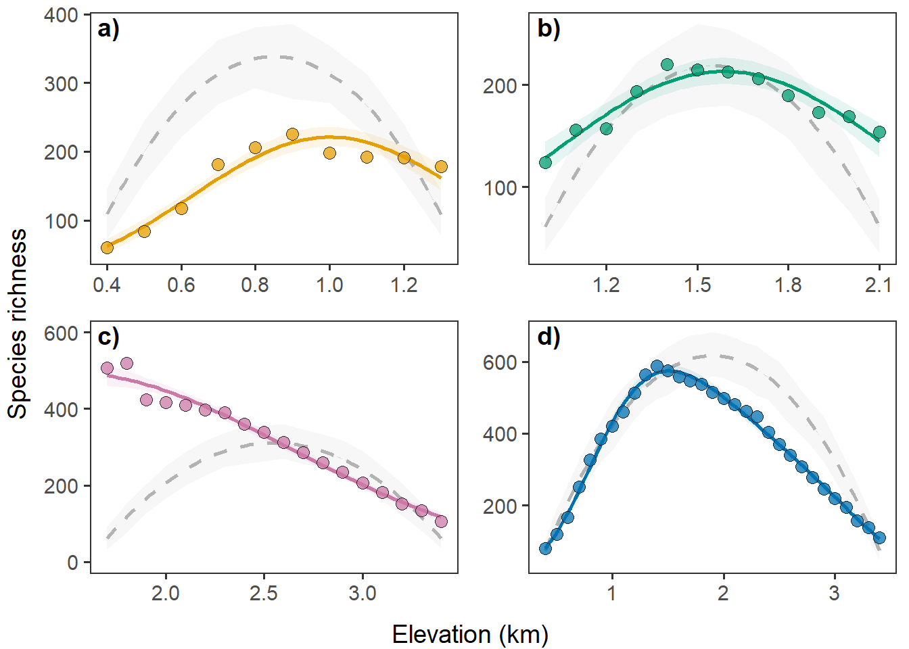
The Wald’s test suggested that elevation is indeed significantly associated with species richness. All estimated coefficients were significantly different from zero, except the Intercept for Morni Hills (Table 3). The linear and cubic elevation terms were positively associated, whereas the quadratic and quartic elevation terms were negatively associated with species richness. The coefficient for linear elevation (Elev) was positive and highly significant for all the selected sites. However, the magnitude was highest for Morni Hills and it was lowest for Churdhar WLS, suggesting that the magnitude of increase in species richness is expected to be higher in Morni Hills than the Churdhar WLS (Table 3). Similarly, the coefficient for quadratic elevation (Elev2) was negative and highly significant for all the sites, suggesting a significant decrease in species richness at higher elevations. The Chail WLS and Churdhar WLS included only quadratic elevation terms, suggesting that the pattern does not exhibit significant non-linear patterns beyond the quadratic term. However, the Morni Hills included a significant cubic elevation (Elev3) and All Sites quartic elevation (Elev4), suggesting significant non-linear relationship between elevation and species richness.
| Site | Intercept | Elev | Elev2 | Elev3 | Elev4 |
|---|---|---|---|---|---|
| Morni | -0.15 ± 0.92 | 14.95 ± 3.46*** | -13.1 ± 4.12** | 3.65 ± 1.56* | NA |
| Chail | 1.65 ± 0.51** | 4.68 ± 0.67*** | -1.47 ± 0.21*** | NA | NA |
| Churdhar | 5.32 ± 0.36*** | 1.19 ± 0.3*** | -0.4 ± 0.06*** | NA | NA |
| All | 1.8 ± 0.23*** | 8.49 ± 0.61*** | -5.69 ± 0.56*** | 1.65 ± 0.21*** | -0.19 ± 0.03*** |
Comparison with null model
The comparison of observed species richness (S) with predicted species richness (Snull) from mid-domain effect null model indicated substantial deviations (Figure 6). The results of simple linear regression indicated that the null species richness (Snull) did not fully explain the observed species richness (Table 6). The null species richness is significantly and positively associated with observed species richness for Chail WLS (F1,10 = 58.96, p < 0.001) and All Sites combined (F1,29 = 170.20, p < 0.001). However, there was no significant relationship for Morni Hills (F1,8 = 5.00, p = 0.056) and Churdhar WLS (F1,16 = 0.03, p = 0.862). The predicted null richness explained the 30.79%, 84.04% and 84.94% variation in observed species richness (S) for Morni Hills, Chail WLS and All Sites combined, respectively. On the other hand, the predicted species richness failed to explain any variation in observed species richness for Churdhar WLS (Table 6).
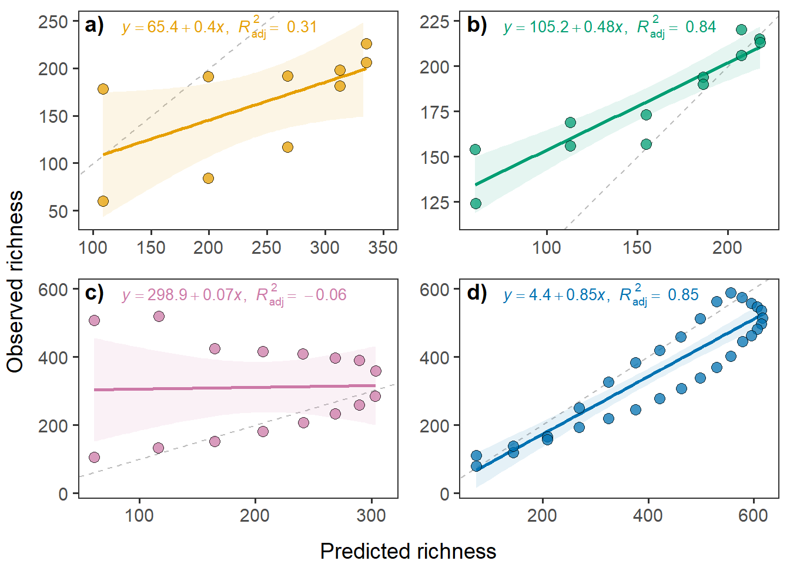
Elevational pattern of residual species richness
The residual species richness, i.e., differences in the observed and predicted null richness, varied from 1 to 446 across all the selected sites. These differences varied from 8 to 150 for Morni Hills, 1 to 93 for Chail WLS, 3 to 446 for Churdhar WLS and 1 to 161 for All Sites combined. The elevational pattern of residual species richness followed a cubic relationship for All Sites and a quadratic relationship for Morni Hills, Chail WLS and Churdhar WLS (Table 7). Generally, the residual species richness tended to decrease at lower elevations, whereas it tended to increase at higher elevations. The decrease was more prominent for Churdhar WLS, whereas the increase was more prominent for Morni Hills. Overall, this quadratic linear model explained about 94%, 89% and 99% variation in residual species richness for Morni Hills, Chail WLS and Churdhar WLS, respectively (Figure 7). However, the residual species richness exhibited a strong cubic relationship with elevation for the pooled data from All Sites (Figure 7 d). This cubic relationship indicated a slight increase in residual species richness at lower elevations, then a strong decrease at intermediate elevations and an increase at higher elevations. This cubic pattern of residual species richness suggests that the observed species richness substantially deviates from the predicted null richness at intermediate to higher elevations.
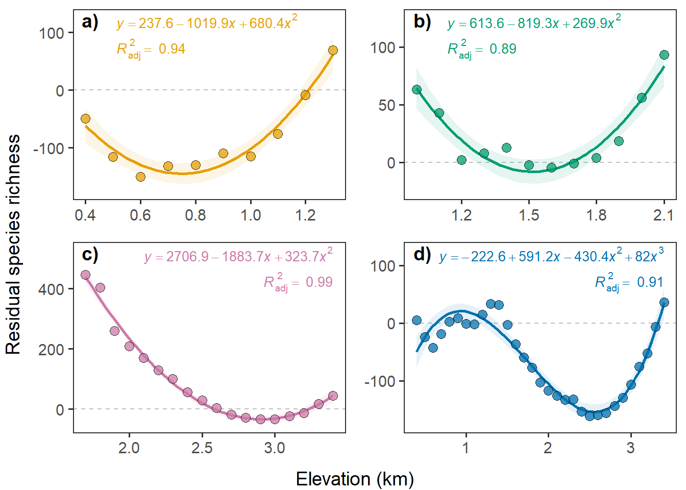
Discussion
In this study, we aimed to explore the elevational patterns of plant species richness. Additionally, we sought to compare the observed pattern with null predictions and examine the elevational patterns of residual plant species (i.e., the difference between observed and predicted values from the null model) to assess the influence of random processes on species richness. Our results indicated substantial variation in the observed plant taxa across sites along the elevational gradient (Question 1). Plant species richness generally exhibited a unimodal relationship with elevation, but a decreasing pattern was also observed (Question 2). Further, the observed species richness considerably deviated from the predictions of null model across the sites (Question 3). The magnitude and direction of these deviations (residual species richness) varied along the elevation gradient. Furthermore, the residual species richness demonstrated non-linear relationships with elevation (Question 4). Overall, our findings provide valuable insights into the relationship between elevational gradients and plant species richness.
Our data indicated substantial differences in observed plant taxa across the three sites along the elevational gradient. We recorded greater number of total and unique plant taxa at lower (Morni Hills) and upper (Churdhar WLS) elevations as compared to intermediate elevations (Chail WLS). Contrary to our expectations, we recorded minimum number of total and unique plant taxa at intermediate elevations (Chail WLS). The lower taxa records at intermediate elevations suggest dominance of fewer plant taxa. Alternatively, this region may under-explored and more plant taxa can be recorded in future surveys. Further, we observed no difference in the average species richness per elevational band for lower and intermediate elevations, but it was significantly higher at upper elevational gradients. The upper elevational gradient (Churdhar WLS) not only showed higher mean, but also exhibited large variance for plant species richness per elevational bands. This higher mean and variance at high elevation site indicate striking variation in plant species richness along elevational gradient. Thus, our data suggest substantial variation in plant taxa across the elevational gradient in western Himalayas.
The primary aim of this study was to investigate the elevational patterns of plant species in western Himalayas, focusing on three distinct sites along an elevational gradient. The results obtained from this study revealed interesting patterns, with sites at lower (Morni Hills) and intermediate (Chail WLS) elevations displaying a unimodal distribution of plant species along the elevational gradient, while the third site (Churdhar WLS) at higher elevations exhibited a decreasing pattern. Furthermore, the entire elevational gradient (All Sites) also demonstrated a unimodal relationship between elevation and plant species richness. The unimodal pattern showed that the species richness initially increases to reach a maximum richness (mid-elevational peak) and then decreases along the elevational gradient (Guo et al., 2013; McCain & Grytnes, 2010). This observed elevational pattern is consistent with previous research conducted in Himalayas (Khuroo, Weber, Malik, Reshi, & Dar, 2011; Manish et al., 2017; Oommen & Shanker, 2005; Rana, Gross, et al., 2019) and other mountain ecosystems (Guo et al., 2013; McCain & Grytnes, 2010). In case of plants, this pattern has been observed for bryophytes (Grau et al., 2007), pteridophytes (Bhattarai et al., 2004; Kessler et al., 2011), angiosperms (Bryant et al., 2008; Manish, 2021), orchids (Djordjević, Tsiftsis, Kindlmann, & Stevanović, 2022), woody plants (Khuroo et al., 2011; Oommen & Shanker, 2005), and vascular plants (Acharya, Chettri, & Vijayan, 2011; Chawla et al., 2008; Thorne et al., 2022; Vetaas & Grytnes, 2002). Since three out of four studied elevational gradients observed this pattern, our analysis also support that the unimodal relationship between elevation and species richness is widespread among plants (Guo et al., 2013; McCain & Grytnes, 2010; Rahbek, 1995).
One notable finding of the present study was the decreasing pattern of plant species richness at higher elevational gradient (Churdhar WLS). This finding aligns with earlier studies conducted in the Himalayas (Bisht et al., 2022) and other mountain ecosystems (Di Musciano et al., 2021; Kessler et al., 2011; Trigas et al., 2013). Such decreasing elevational pattern of species richness has been also observed for microbes (Bryant et al., 2008), bryophytes (Rodrı́guez-Quiel, Kluge, Mendieta-Leiva, & Bader, 2022), ferns (Kessler et al., 2011), trees (Homeier, Breckle, Günter, Rollenbeck, & Leuschner, 2010), and vascular plants (Bisht et al., 2022; Peters et al., 2016; Trigas et al., 2013). These observations suggest that decreasing patterns of plant species richness are not uncommon, though the unimodal pattern is frequently observed (Guo et al., 2013; McCain & Grytnes, 2010). Thus, plant species richness may not always exhibit a unimodal relationship with elevation and further studies along elevational gradients would be valuable for understanding elevational patterns of species richness.
Another aim of the present study was to compare the observed species richness patterns to null predictions using the mid-domain effect (MDE) null model (Colwell & Lees, 2000). The MDE null model assumes that species ranges are randomly distributed within the given domains, and predicts a unimodal pattern of species richness along an elevational gradient, with peak richness occurring at the midpoint of the gradient. This pattern arises due to the geometric constraints imposed by the boundaries of the elevational range (Colwell et al., 2004). Thus, the MDE model assumes that species richness is solely determined by the spatial constraints of the geographic range, independent of environmental factors (Colwell & Lees, 2000). Our results showed significant to substantial deviations in observed species richness from the predictions of the MDE null model. Specifically, the species richness patterns at upper (Churdhar WLS) and lower (Morni Hills) elevational gradients significantly deviated from the predictions of MDE model. This significant deviation might be due to presence of small-ranged species because smaller ranges experience less geometric constrain as compared to larger ranges (R. R. Dunn et al., 2007). Further, the observed species richness across the entire elevational gradient (All Sites) was closely matched with predictions of MDE model followed by the intermediate elevational gradient (Chail WLS). These close agreements with predictions of MDE model might be due to increased geometric constraints on species ranges. The presence of large-ranged species at intermediate elevations and the extended scale for entire elevational gradient might have contributed to the increased geometric constraints on species ranges. Despite variable agreement (Colwell et al., 2004), we observed considerable deviations in observed species richness from predictions of null model. Thus, our findings indicate that other factors beyond the range constraints may be playing a crucial role in shaping elevational patterns of species richness.
In addition to comparing observed patterns with null predictions, we aimed to investigate the elevational pattern of residual species richness (the difference between observed species richness and predictions of null model). The residual species richness represent the magnitude and direction of deviations from the predictions of mid-domain effect (MDE) null model. We observed positive residual species richness for sites representing intermediate (Chail WLS) and upper (Churdhar WLS) elevational gradient. This positive deviation indicated higher observed species richness than the predictions under null model of range constraints. On the other hand, we observed a general negative residual species richness for the entire elevational gradient (All Sites) and the site representing lower elevation gradient (Morni Hills). This negative residual species richness suggested lower than expected species richness based on range constraints alone. These deviations of variable magnitude and directions indicate the presence of other factors driving species richness rather than the range constraints alone.
An important finding of present study is that residual species richness showed significant quadratic relationships with elevation for the three individual sites and a significant cubic relationship for the entire elevational gradient. The significant quadratic relationships observed at the three individual sites suggest a complex pattern of species richness at smaller elevational gradients. This quadratic relationship indicates that the magnitude of deviation initially decreases with elevation, reaches a minimum, and then increases at higher elevations. Such relationship between elevation and magnitude of deviations indicate that species richness patterns are shaped by joint effects of different ecological processes occurring along the gradient. Further, the significant cubic relationship observed for the entire elevational gradient suggests a more complex and non-linear response of species richness to elevation. This cubic relationship indicates that the magnitude of deviation initially increases with elevation, reaches a peak, declines, and then potentially increases again at higher elevations. Such a pattern suggests the presence of additional factors or processes that influence species richness dynamics along the entire gradient. These factors could include large-scale climatic variables, historical and evolutionary processes, or interactions with other ecological variables that are not accounted for by the null model (Gaston, 2000).
The observed species richness showed significant deviations from the predictions of null model and the residual species richness also demonstrated significant quadratic or cubic relationship with elevation. Both these observations indicate that the observed species richness pattern can not be achieved solely due to random processes. Our study highlights the limitations of the null model in fully capturing the observed elevational patterns of species richness. While null models provide a useful baseline for comparison and understanding broad-scale patterns, their assumptions and simplifications may not fully represent the complexity of ecological processes and interactions that shape elevational gradients. The observed deviations from the null model emphasise the need for considering additional environmental variables, biotic interactions, and historical factors when studying elevational patterns of species richness.
It is important to note that the observed elevational patterns in this study are specific to the selected sites and the study area. The present study used the range interpolation method to study the elevational patterns. Although it is widely used for biogeographical and macroecological studies (Grytnes & Vetaas, 2002; Hu et al., 2016; Rana, Gross, et al., 2019; Vetaas & Grytnes, 2002), it has been criticised for its assumptions of continuous distribution of species (Colwell et al., 2004; R. R. Dunn et al., 2007). Further, the present study was based on the data compiled from the published flora, which can not be considered free from bias. Specifically, incomplete flora or biased estimation of distribution ranges can influence the observed patterns of species richness. Despite these limitations, data from published floras have been used for exploring the ecological and biogeographical patterns (Di Musciano et al., 2021; Qian et al., 2022; Vetaas & Grytnes, 2002). Overall, our study highlights the importance of considering the specific characteristics and dynamics of each site when studying elevational patterns. Further, the present study underscores the importance of considering the entire elevational gradient to capture the full range of ecological dynamics and complexities involved in shaping elevational patterns of species richness. Future studies should consider expanding the study area and incorporating additional environmental variables to gain a more comprehensive understanding of the drivers and mechanisms underlying elevational patterns of plant species. Environmental factors, geographical context, and historical factors can significantly influence elevational patterns, and caution should be exercised when generalising these findings to other regions or ecosystems.
Conclusion
In conclusion, our study contributes to the understanding of plant species richness along elevational gradients. We observed considerable differences in species richness across the studied sites and identified a complex variable non-linear relationship between elevation and species richness. Further, the deviation from the predictions of the null model highlights the importance of factors beyond range constraints (mid-domain effect) in shaping elevational patterns of species richness. The analysis of residual species richness further elucidated elevations with positive and negative deviations, shedding light on the underlying ecological processes driving species richness. Furthermore, the quadratic or cubic relationship between elevation and residual species richness suggested the non-random distribution of plants influenced by multiple ecological processes. These findings highlight the limitations of the null model in fully capturing the complexities of elevational patterns and emphasise the need for incorporating additional ecological variables and mechanisms in future studies. Future research should focus on unravelling the determinants and specific mechanisms that contribute to these observed patterns. Such studies will enhance our understanding of the ecological processes shaping biodiversity and assist in developing effective conservation strategies in the face of environmental changes. The findings of this analysis contribute to our understanding of biodiversity patterns along elevation gradients and have implications for biodiversity conservation and ecosystem management. Overall, this study contributes to our understanding of the elevational patterns of plant species richness. The observed differences across study sites, the complex elevational patterns, the deviations from the null model predictions, and the quadratic or cubic relationships with elevation highlight the dynamic nature of species richness and the importance of considering multiple factors when studying elevational patterns of biodiversity.
Acknowledgements
Authors are grateful to the Principal Chief Conservator of Forests (PCCF) of the Haryana Forest department and Himachal Pradesh Forest department for kindly granting the permission to visit the selected protected areas. We are also thankful to the Chairperson, Department of Botany, Panjab University, Chandigarh, for providing all the necessary facilities required for the work. We would like to express our heartfelt gratitude to Sabir Hussain, Alok Sharma, Kamal, Pravesh for their invaluable assistance and support during the fieldwork phase of this research. Additionally, we extend our appreciation to the staff and authorities of Forest Department of Himachal Pradesh who facilitated the logistics and permits required for the fieldwork.
Conflict of interest
The authors declare that they have no known competing financial interests or personal relationships that could have appeared to influence the work reported in this paper.
Funding
University Grants Commission, Government of India, New Delhi is acknowledged for financial support in the form of Junior Research Fellowships to Abhishek Kumar [507/ (OBC) (CSIR-UGC NET DEC. 2016)], Meenu Patil [(492/ (CSIR-UGC NET JUNE 2017)], and Pardeep Kumar [443/ (CSIR-UGC NET DEC. 2017)].
Supplementary tables
| Morni | Chail | Churdhar | Total |
|---|---|---|---|
| Fabaceae (105) | Asteraceae (41) | Asteraceae (47) | Fabaceae (133) |
| Asteraceae (57) | Fabaceae (34) | Poaceae (39) | Asteraceae (109) |
| Poaceae (46) | Poaceae (25) | Rosaceae (38) | Poaceae (93) |
| Lamiaceae (32) | Lamiaceae (22) | Lamiaceae (30) | Lamiaceae (58) |
| Malvaceae (28) | Rosaceae (20) | Ranunculaceae (29) | Rosaceae (43) |
| Site | Model | D2 | D2adj | \(\phi\) | AICc | Δ AICc | Dresid | dfresid | p |
|---|---|---|---|---|---|---|---|---|---|
| Morni | M0 | 0.00 | -0.13 | 22.11 | 270.10 | 179.57 | 198.99 | 9 | NA |
| Morni | M1 | 0.48 | 0.33 | 12.99 | 178.22 | 87.69 | 103.90 | 8 | <0.001 |
| Morni | M2 | 0.94 | 0.91 | 1.70 | 90.52 | 0.00 | 11.92 | 7 | <0.001 |
| Morni | M3 | 0.97 | 0.94 | 1.07 | 91.00 | 0.47 | 6.39 | 6 | 0.019 |
| Morni | M4 | 0.98 | 0.96 | 0.73 | 97.26 | 6.73 | 3.65 | 5 | 0.098 |
| Morni | M5 | 0.99 | 0.98 | 0.38 | 110.12 | 19.59 | 1.51 | 4 | 0.144 |
| Chail | M0 | 0.00 | -0.10 | 5.13 | 143.14 | 44.75 | 56.46 | 11 | NA |
| Chail | M1 | 0.04 | -0.17 | 5.41 | 143.71 | 45.31 | 54.09 | 10 | 0.124 |
| Chail | M2 | 0.91 | 0.88 | 0.57 | 98.39 | 0.00 | 5.11 | 9 | <0.001 |
| Chail | M3 | 0.94 | 0.90 | 0.43 | 101.43 | 3.03 | 3.43 | 8 | 0.195 |
| Chail | M4 | 0.95 | 0.91 | 0.37 | 106.90 | 8.50 | 2.62 | 7 | 0.367 |
| Chail | M5 | 0.96 | 0.90 | 0.41 | 115.53 | 17.13 | 2.44 | 6 | 0.677 |
| Churdhar | M0 | 0.00 | -0.06 | 53.68 | 1049.65 | 896.40 | 912.53 | 17 | NA |
| Churdhar | M1 | 0.94 | 0.93 | 3.68 | 198.49 | 45.25 | 58.82 | 16 | <0.001 |
| Churdhar | M2 | 0.98 | 0.98 | 0.94 | 156.64 | 3.40 | 14.06 | 15 | <0.001 |
| Churdhar | M3 | 0.99 | 0.99 | 0.52 | 153.24 | 0.00 | 7.30 | 14 | 0.009 |
| Churdhar | M4 | 0.99 | 0.99 | 0.50 | 156.37 | 3.12 | 6.50 | 13 | 0.372 |
| Churdhar | M5 | 0.99 | 0.99 | 0.53 | 160.92 | 7.67 | 6.41 | 12 | 0.767 |
| All | M0 | 0.00 | -0.03 | 78.84 | 2603.04 | 2345.50 | 2365.19 | 30 | NA |
| All | M1 | 0.04 | -0.03 | 78.14 | 2506.28 | 2248.73 | 2266.13 | 29 | <0.001 |
| All | M2 | 0.93 | 0.92 | 6.31 | 419.39 | 161.85 | 176.79 | 28 | <0.001 |
| All | M3 | 0.98 | 0.97 | 2.12 | 302.43 | 44.88 | 57.17 | 27 | <0.001 |
| All | M4 | 1.00 | 1.00 | 0.36 | 257.54 | 0.00 | 9.42 | 26 | <0.001 |
| All | M5 | 1.00 | 1.00 | 0.31 | 258.87 | 1.33 | 7.65 | 25 | 0.184 |
| Site | Intercept | Snull | F | df | p | R2adj |
|---|---|---|---|---|---|---|
| Morni | 65.39 ± 46.18 | 0.4 ± 0.18 | 5.00 | 1,8 | 0.056 | 0.31 |
| Chail | 105.21 ± 10.45*** | 0.48 ± 0.06*** | 58.96 | 1,10 | <0.001 | 0.84 |
| Churdhar | 298.94 ± 85.69** | 0.07 ± 0.37 | 0.03 | 1,16 | 0.862 | -0.06 |
| All | 4.45 ± 29.65 | 0.85 ± 0.06*** | 170.20 | 1,29 | <0.001 | 0.85 |
| Site | Intercept | Elev | Elev2 | Elev3 | F | df | p | R2adj |
|---|---|---|---|---|---|---|---|---|
| Morni | 237.64 ± 48.68** | -1019.86 ± 123.22*** | 680.36 ± 71.69*** | NA | 73.45 | 2,7 | <0.001 | 0.94 |
| Chail | 613.6 ± 67.77*** | -819.31 ± 90.43*** | 269.92 ± 29.03*** | NA | 45.16 | 2,9 | <0.001 | 0.89 |
| Churdhar | 2706.88 ± 101.88*** | -1883.75 ± 82.19*** | 323.67 ± 16.05*** | NA | 697.41 | 2,15 | <0.001 | 0.99 |
| All | -222.61 ± 31.29*** | 591.16 ± 63.59*** | -430.44 ± 37.07*** | 82.03 ± 6.44*** | 102.09 | 3,27 | <0.001 | 0.91 |
Supplementary figures
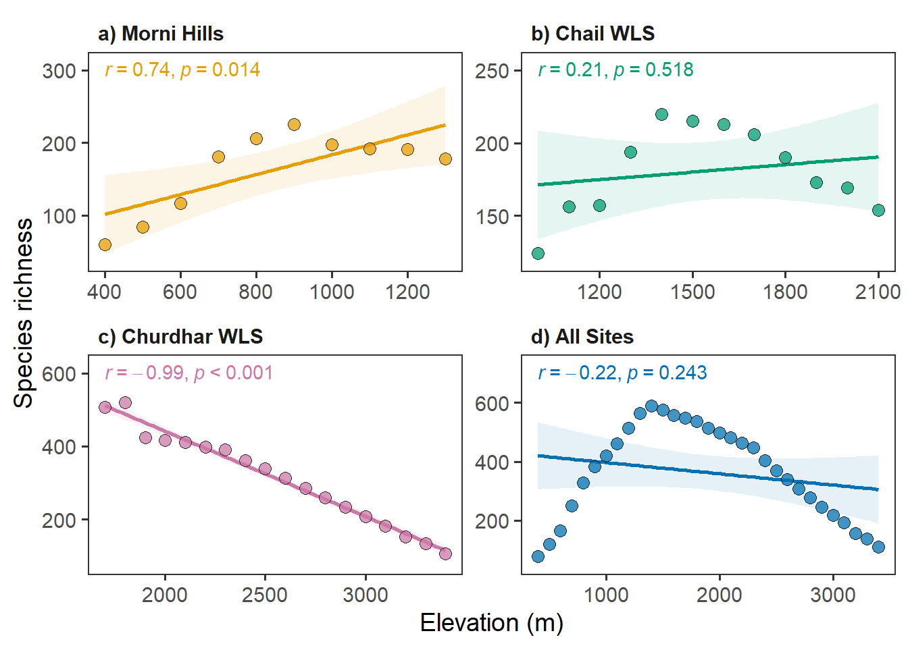
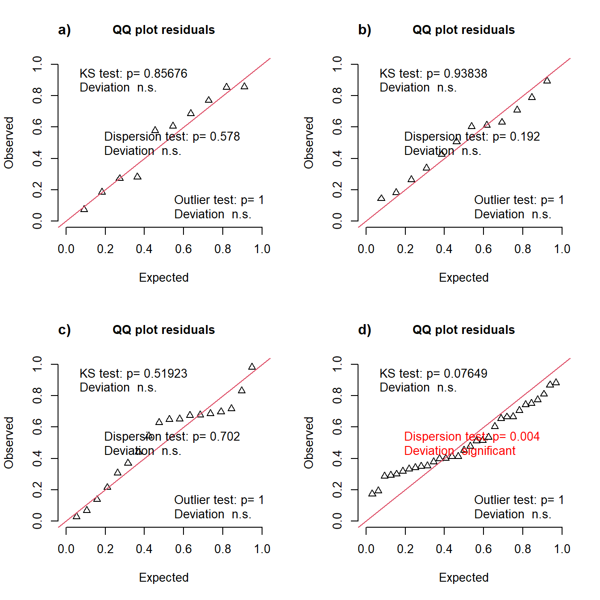
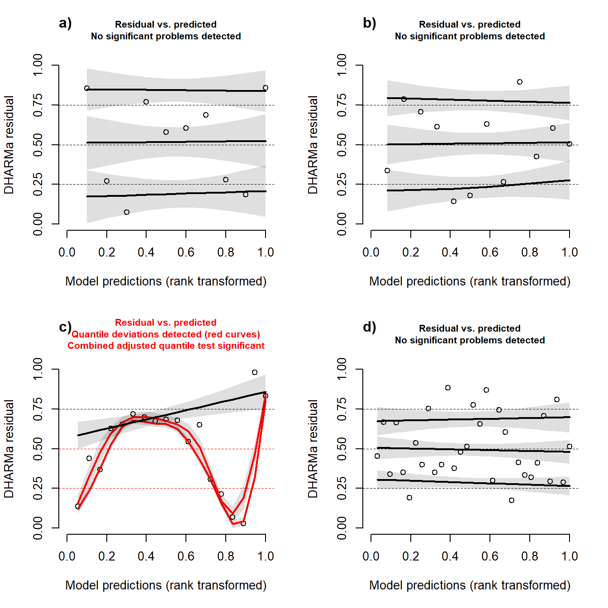
#>
#> DHARMa nonparametric dispersion test via sd of residuals fitted vs.
#> simulated
#>
#> data: simulationOutput
#> dispersion = 0.33287, p-value = 0.004
#> alternative hypothesis: two.sided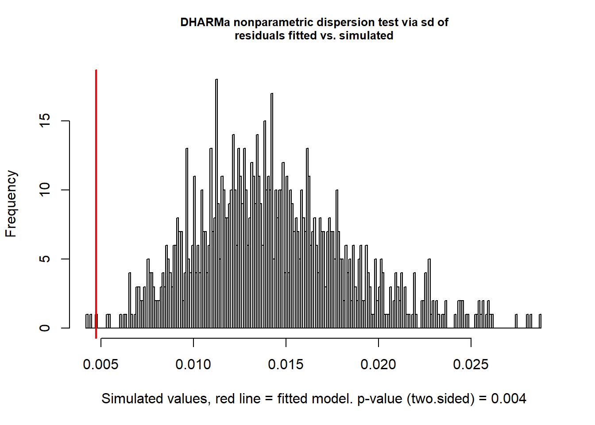
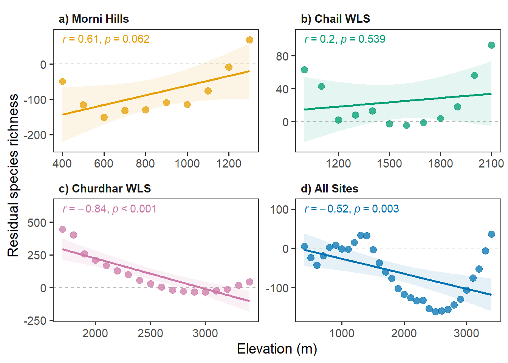
References
Acharya, B. K., Chettri, B., & Vijayan, L. (2011). Distribution pattern of trees along an elevation gradient of eastern himalaya, india. Acta Oecologica, 37(4), 329–336. https://doi.org/10.1016/j.actao.2011.03.005
Angiosperm Phylogeny Group, Chase, M. W., Christenhusz, M. J. M., Fay, M. F., Byng, J. W., Judd, W. S., … Stevens, P. F. (2016). An update of the Angiosperm Phylogeny Group classification for the orders and families of flowering plants: APG IV. Botanical Journal of the Linnean Society, 181(1), 1–20. https://doi.org/10.1111/boj.12385
Balkrishna, A., Joshi, B., Srivastava, A., & Shukla, B. (2018). Phyto-resources of Morni Hills, Panchkula, Haryana. Journal of Non-Timber Forest Products, 25(2), 91–98. https://doi.org/10.54207/bsmps2000-2018-p430i5
Balkrishna, A., Srivastava, A., Shukla, B., Mishra, R., & Joshi, B. (2018). Medicinal plants of Morni Hills, Shivalik Range, Panchkula, Haryana. Journal of Non-Timber Forest Products, 25(1), 1–14. https://doi.org/10.54207/bsmps2000-2018-ir3j0n
Bánki, O., Roskov, Y., Döring, M., Ower, G., Vandepitte, L., Hobern, D., … Legume Phylogeny Working Group (LPWG). (2023). Catalogue of life checklist (annual checklist 2023). Catalogue of Life. https://doi.org/10.48580/dfsr
Beck, H. E., Zimmermann, N. E., McVicar, T. R., Vergopolan, N., Berg, A., & Wood, E. F. (2018). Present and future Köppen-Geiger climate classification maps at 1-km resolution. Scientific Data, 5, 180214. https://doi.org/10.1038/sdata.2018.214
Bhardwaj, A. (2017). Study on dynamics of plant bioresources in Chail wildlife sanctuary of Himachal Pradesh (PhD thesis, Forest Research Institute (Deemed) University; p. 342). Forest Research Institute (Deemed) University, Dehradun. Retrieved from http://hdl.handle.net/10603/175719
Bhardwaj, A., Verma, R. K., Rana, J. C., Thakur, K., & Verma, J. (2014). Orchid diversity at Chail Wild life Sanctuary, Himachal Pradesh, Northwest Himalaya. Journal of Orchid Society of India, 28, 67–74.
Bhattarai, K. R., Vetaas, O. R., & Grytnes, J. A. (2004). Fern species richness along a central Himalayan elevational gradient, Nepal. Journal of Biogeography, 31(3), 389–400. https://doi.org/10.1046/j.0305-0270.2003.01013.x
Bisht, M., Sekar, K. C., Mukherjee, S., Thapliyal, N., Bahukhandi, A., Singh, D., … Dey, D. (2022). Influence of anthropogenic pressure on the plant species richness and diversity along the elevation gradients of indian himalayan high-altitude protected areas. Frontiers in Ecology and Evolution, 10, 751989. https://doi.org/10.3389/fevo.2022.751989
Brown, M. J. M., Walker, B. E., Black, N., Govaerts, R. H. A., Ondo, I., Turner, R., & Lughadha, E. N. (2023). rWCVP: A companion R package for the world checklist of vascular plants. New Phytologist. https://doi.org/10.1111/nph.18919
Bryant, J. A., Lamanna, C., Morlon, H., Kerkhoff, A. J., Enquist, B. J., & Green, J. L. (2008). Microbes on mountainsides: Contrasting elevational patterns of bacterial and plant diversity. Proceedings of the National Academy of Sciences, 105(Suppl. 1), 11505–11511. https://doi.org/10.1073/pnas.0801920105
Burnham, K. P., & Anderson, D. R. (Eds.). (2002). Model selection and multimodel inference (2nd ed., p. 488). New York: Springer. https://doi.org/10.1007/b97636
Chamberlain, S., Barve, V., Mcglinn, D., Oldoni, D., Desmet, P., Geffert, L., & Ram, K. (2023). rgbif: Interface to the global biodiversity information facility API (Version 3.7.7). CRAN. Retrieved from https://cran.r-project.org/package=rgbif
Champion, H. G., & Seth, S. K. (1968). A revised survey of the forest types of India (p. 404). Delhi: Government of India.
Chawla, A., Rajkumar, S., Singh, K. N., Lal, B., Singh, R. D., & Thukral, A. K. (2008). Plant species diversity along an altitudinal gradient of bhabha valley in western himalaya. Journal of Mountain Science, 5(2), 157–177. https://doi.org/10.1007/s11629-008-0079-y
Choudhary, A. K., Punam, Sharma, P. K., & Chandel, S. (2007). Study on the physiography and biodiversity of Churdhar wildlife sanctuary of Himachal Himalayas, India. Tigerpaper, 34, 27–32.
Choudhary, R. K., & Lee, J. (2012). A floristic reconnaissance of Churdhar wildlife sanctuary of Himachal Pradesh, India. Manthan, 13, 2–12.
Chowdhery, H. J., & Wadhwa, B. M. (1984). Flora of Himachal Pradesh (Vol. 1–3). Calcutta: Botanical Survey of India.
Collett, H. (1902). Flora Simlensis. Simla: Thacker, Spink & Co. https://doi.org/10.5962/bhl.title.138567
Colwell, R. K., & Hurtt, G. C. (1994). Nonbiological gradients in species richness and a spurious rapoport effect. American Naturalist, 144(4), 570–595. https://doi.org/10.1086/285695
Colwell, R. K., & Lees, D. C. (2000). The mid-domain effect: Geometric constraints on the geography of species richness. Trends in Ecology & Evolution, 15(2), 70–76. https://doi.org/10.1016/s0169-5347(99)01767-x
Colwell, R. K., Rahbek, C., & Gotelli, N. J. (2004). The mid-domain effect and species richness patterns: What have we learned so far? American Naturalist, 163(3), E1–E23. https://doi.org/10.1086/382056
Dhiman, H., Saharan, H., & Jakhar, S. (2020). Floristic diversity assessment and vegetation analysis of the upper altitudinal ranges of Morni Hills, Panchkula, Haryana, India. Asian Journal of Conservation Biology, 9(1), 134–142.
Dhiman, H., Saharan, H., & Jakhar, S. (2021). Study of invasive plants in tropical dry deciduous forests – biological spectrum, phenology, and diversity. Forestry Studies, 74(1), 58–71. https://doi.org/10.2478/fsmu-2021-0004
Di Musciano, M., Zannini, P., Ferrara, C., Spina, L., Nascimbene, J., Vetaas, O. R., … Chiarucci, A. (2021). Investigating elevational gradients of species richness in a mediterranean plant hotspot using a published flora. Frontiers of Biogeography, 13(3), e50007. https://doi.org/10.21425/f5fbg50007
Djordjević, V., Tsiftsis, S., Kindlmann, P., & Stevanović, V. (2022). Orchid diversity along an altitudinal gradient in the central balkans. Frontiers in Ecology and Evolution, 10, 929266. https://doi.org/10.3389/fevo.2022.929266
Dunn, P. K., & Smyth, G. K. (1996). Randomized quantile residuals. Journal of Computational and Graphical Statistics, 5(3), 236–244. https://doi.org/10.2307/1390802
Dunn, R. R., McCain, C. M., & Sanders, N. J. (2007). When does diversity fit null model predictions? Scale and range size mediate the mid-domain effect. Global Ecology and Biogeography, 16(3), 305–312. https://doi.org/10.1111/j.1466-8238.2006.00284.x
Duthie, J. F. (1903–1915). Flora of the upper Gangetic plain, and of the adjacent Siwalik and sub-Himalayan tracts (Vol. 1–3). Calcutta: Superintendent of Government Printing. https://doi.org/10.5962/bhl.title.10981
eFI. (2023). eFlora of India: Database of plants of Indian subcontinent. Retrieved from https://efloraofindia.com/
Fick, S. E., & Hijmans, R. J. (2017). WorldClim 2: New 1-km spatial resolution climate surfaces for global land areas. International Journal of Climatology, 37(12), 4302–4315. https://doi.org/10.1002/joc.5086
FOI. (2023). Flowers of India. Retrieved from http://www.flowersofindia.net/
Games, P. A., & Howell, J. F. (1976). Pairwise multiple comparison procedures with unequal N’s and/or variances: A monte carlo study. Journal of Educational Statistics, 1(2), 113–125. https://doi.org/10.2307/1164979
Gaston, K. J. (2000). Global patterns in biodiversity. Nature, 405(6783), 220–227. https://doi.org/10.1038/35012228
Gotelli, N. J., Anderson, M. J., Arita, H. T., Chao, A., Colwell, R. K., Connolly, S. R., … Willig, M. R. (2009). Patterns and causes of species richness: A general simulation model for macroecology. Ecology Letters, 12(9), 873–886. https://doi.org/10.1111/j.1461-0248.2009.01353.x
Govaerts, R., Lughadha, E. N., Black, N., Turner, R., & Paton, A. (2021). The World Checklist of Vascular Plants, a continuously updated resource for exploring global plant diversity. Scientific Data, 8(1), 215. https://doi.org/10.1038/s41597-021-00997-6
Grau, O., Grytnes, J. A., & Birks, H. J. B. (2007). A comparison of altitudinal species richness patterns of bryophytes with other plant groups in nepal, central himalaya. Journal of Biogeography, 34(11), 1907–1915. https://doi.org/10.1111/j.1365-2699.2007.01745.x
Grytnes, J. A., & Vetaas, O. R. (2002). Species richness and altitude: A comparison between null models and interpolated plant species richness along the Himalayan altitudinal gradient, Nepal. American Naturalist, 159(3), 294–304. https://doi.org/10.1086/338542
Guo, Q., Kelt, D. A., Sun, Z., Liu, H., Hu, L., Ren, H., & Wen, J. (2013). Global variation in elevational diversity patterns. Scientific Reports, 3, 3007. https://doi.org/10.1038/srep03007
Gupta, H. (1998). Comparative studies on the medicinal and aromatic flora of Churdhar and Rohtang areas of Himachal Pradesh (Master’s thesis, Dr Yashwant Singh Parmar University of Horticulture and Forestry; p. 228). Dr Yashwant Singh Parmar University of Horticulture and Forestry, Solan. Retrieved from http://krishikosh.egranth.ac.in/handle/1/5810135063
Hartig, F. (2022). DHARMa: Residual diagnostics for hierarchical (multi-level / mixed) regression models (Version 0.4.6). CRAN. Retrieved from https://cran.r-project.org/package=DHARMa
Hijmans, R. J. (2023). terra: Spatial data analysis (Version 1.7.29). CRAN. Retrieved from https://cran.r-project.org/package=terra
Hilbe, J. M. (2014). Modeling count data. Cambridge: Cambridge University Press. https://doi.org/10.1017/cbo9781139236065
Homeier, J., Breckle, S.-W., Günter, S., Rollenbeck, R. T., & Leuschner, C. (2010). Tree diversity, forest structure and productivity along altitudinal and topographical gradients in a species-rich ecuadorian montane rain forest. Biotropica, 42(2), 140–148. https://doi.org/10.1111/j.1744-7429.2009.00547.x
Hu, W., Wu, F., Gao, J., Yan, D., Liu, L., & Yang, X. (2016). Influences of interpolation of species ranges on elevational species richness gradients. Ecography, 40(10), 1231–1241. https://doi.org/10.1111/ecog.02534
Humboldt, A. von, & Bonpland, A. (1805). Essai sur la géographie des plantes (p. 274). Paris: Chez Levrault, Schoell et Compagnie. https://doi.org/10.5962/bhl.title.9309
Hurvich, C. M., & Tsai, C.-L. (1989). Regression and time series model selection in small samples. Biometrika, 76(2), 297–307. https://doi.org/10.1093/biomet/76.2.297
IUCN. (2023). The IUCN red list of threatened species. Retrieved from https://www.iucnredlist.org
Johnson, J. B., & Omland, K. S. (2004). Model selection in ecology and evolution. Trends in Ecology & Evolution, 19(2), 101–108. https://doi.org/10.1016/j.tree.2003.10.013
Kassambara, A. (2023). rstatix: Pipe-friendly framework for basic statistical tests (Version 0.7.2). CRAN. Retrieved from https://cran.r-project.org/package=rstatix
Kessler, M., Kluge, J., Hemp, A., & Ohlemüller, R. (2011). A global comparative analysis of elevational species richness patterns of ferns. Global Ecology and Biogeography, 20(6), 868–880. https://doi.org/10.1111/j.1466-8238.2011.00653.x
Khuroo, A. A., Weber, E., Malik, A. H., Reshi, Z. A., & Dar, G. H. (2011). Altitudinal distribution patterns of the native and alien woody flora in kashmir himalaya, india. Environmental Research, 111(7), 967–977. https://doi.org/10.1016/j.envres.2011.05.006
Kumar, R. (2013). Studies on plant biodiversity of Chail wildlife sanctuary in Himachal Pradesh (Master’s thesis, Dr Yashwant Singh Parmar University of Horticulture and Forestry; p. 119). Dr Yashwant Singh Parmar University of Horticulture and Forestry, Solan. Retrieved from http://krishikosh.egranth.ac.in/handle/1/91126
Li, L., Xu, X., Qian, H., Huang, X., Liu, P., Landis, J. B., … Deng, T. (2022). Elevational patterns of phylogenetic structure of angiosperms in a biodiversity hotspot in eastern Himalaya. Diversity and Distributions, 28(12), 2534–2548. https://doi.org/10.1111/ddi.13513
Lomolino, M. V. (2001). Elevation gradients of species-density: Historical and prospective views. Global Ecology and Biogeography, 10(1), 3–13. https://doi.org/10.1046/j.1466-822x.2001.00229.x
Manish, K. (2021). Species richness, phylogenetic diversity and phylogenetic structure patterns of exotic and native plants along an elevational gradient in the himalaya. Ecological Processes, 10, 64. https://doi.org/10.1186/s13717-021-00335-z
Manish, K., Pandit, M. K., Telwala, Y., Nautiyal, D. C., Koh, L. P., & Tiwari, S. (2017). Elevational plant species richness patterns and their drivers across non-endemics, endemics and growth forms in the eastern Himalaya. Journal of Plant Research, 130(5), 829–844. https://doi.org/10.1007/s10265-017-0946-0
McCain, C. M. (2009). Global analysis of bird elevational diversity. Global Ecology and Biogeography, 18(3), 346–360. https://doi.org/10.1111/j.1466-8238.2008.00443.x
McCain, C. M., & Grytnes, J. A. (2010). Elevational gradients in species richness. In Encyclopedia of life sciences (eLS). Chichester: Wiley. https://doi.org/10.1002/9780470015902.a0022548
Oommen, M. A., & Shanker, K. (2005). Elevational species richness patterns emerge from multiple local mechanisms in himalayan woody plants. Ecology, 86(11), 3039–3047. https://doi.org/10.1890/04-1837
Peters, M. K., Hemp, A., Appelhans, T., Behler, C., Classen, A., Detsch, F., … Steffan-Dewenter, I. (2016). Predictors of elevational biodiversity gradients change from single taxa to the multi-taxa community level. Nature Communications, 7, 13736. https://doi.org/10.1038/ncomms13736
POWO. (2022). Plants of the world online. Kew: Royal Botanic Gardens. Retrieved from http://www.plantsoftheworldonline.org/
Qian, H., Kessler, M., & Vetaas, O. R. (2022). Pteridophyte species richness in the central Himalaya is limited by cold climate extremes at high elevations and rainfall seasonality at low elevations. Ecology and Evolution, 12(5), e8958. https://doi.org/10.1002/ece3.8958
R Core Team. (2023). R: A language and environment for statistical computing (Version 4.3.0). Vienna, Austria: R Foundation for Statistical Computing. Retrieved from https://www.R-project.org/
Radha, Puri, S., Chandel, K., Pundir, A., Thakur, M. S., Chauhan, B., … Kumar, S. (2019). Diversity of ethnomedicinal plants in Churdhar wildlife sanctuary of district Sirmour of Himachal Pradesh, India. Journal of Applied Pharmaceutical Science, 9(11), 48–53. https://doi.org/10.7324/japs.2019.91106
Rahbek, C. (1995). The elevational gradient of species richness: A uniform pattern? Ecography, 18(2), 200–205. https://doi.org/10.1111/j.1600-0587.1995.tb00341.x
Rahbek, C. (2005). The role of spatial scale and the perception of large-scale species-richness patterns. Ecology Letters, 8(2), 224–239. https://doi.org/10.1111/j.1461-0248.2004.00701.x
Rahbek, C., Borregaard, M. K., Colwell, R. K., Dalsgaard, B., Holt, B. G., Morueta-Holme, N., … Fjeldså, J. (2019). Humboldt’s enigma: What causes global patterns of mountain biodiversity? Science, 365(6458), 1108–1113. https://doi.org/10.1126/science.aax0149
Rahmani, A. R., Islam, M. Z., & Kasambe, R. M. (2016). Important bird and biodiversity areas in India: Priority sites for conservation (revised and updated) (2nd ed., Vol. 1, p. 1992). Mumbai, India and Cambridge, UK: Bombay Natural History Society and BirdLife International.
Rana, S. K., Gross, K., & Price, T. D. (2019). Drivers of elevational richness peaks, evaluated for trees in the east Himalaya. Ecology, 100(1), e02548. https://doi.org/10.1002/ecy.2548
Rana, S. K., Price, T. D., & Qian, H. (2019). Plant species richness across the Himalaya driven by evolutionary history and current climate. Ecosphere, 10(11), e02945. https://doi.org/10.1002/ecs2.2945
Rana, S. K., & Rawat, G. S. (2017). Database of Himalayan plants based on published floras during a century. Data, 2(4), 36. https://doi.org/10.3390/data2040036
Rana, S. K., & Rawat, G. S. (2019). Database of vascular plants of Himalaya. Dehradun: Wildlife Institute of India. https://doi.org/10.15468/zdeuix
Rodrı́guez-Quiel, E. E., Kluge, J., Mendieta-Leiva, G., & Bader, M. Y. (2022). Elevational patterns in tropical bryophyte diversity differ among substrates: A case study on baru volcano, panama. Journal of Vegetation Science, 33(3), e13136. https://doi.org/10.1111/jvs.13136
Ruxton, G. D., & Beauchamp, G. (2008). Time for some a priori thinking about post hoc testing. Behavioral Ecology, 19(3), 690–693. https://doi.org/10.1093/beheco/arn020
Singh, N., & Vashistha, B. D. (2014). Flowering plant diversity and ethnobotany of Morni Hills, Siwalik Range, Haryana, India. International Journal of Pharma and Bio Sciences, 5(2), B214–B222.
Steinbauer, M. J., Grytnes, J.-A., Jurasinski, G., Kulonen, A., Lenoir, J., Pauli, H., … Wipf, S. (2018). Accelerated increase in plant species richness on mountain summits is linked to warming. Nature, 556(7700), 231–234. https://doi.org/10.1038/s41586-018-0005-6
Stevens, G. C. (1992). The elevational gradient in altitudinal range: An extension of Rapoport’s latitudinal rule to altitude. American Naturalist, 140(6), 893–911. https://doi.org/10.1086/285447
Subramani, S. P., Kapoor, K. S., & Goraya, G. S. (2014). Additions to the floral wealth of Sirmaur district, Himachal Pradesh from Churdhar wildlife sanctuary. Journal of Threatened Taxa, 6(11), 6427–6452. https://doi.org/10.11609/jott.o2845.6427-52
Thakur, U., Bisht, N. S., Kumar, M., & Kumar, A. (2021). Influence of altitude on diversity and distribution pattern of trees in Himalayan temperate forests of Churdhar wildlife sanctuary, India. Water, Air, & Soil Pollution, 232, 205. https://doi.org/10.1007/s11270-021-05162-8
Thorne, J. H., Choe, H., Dorji, L., Yangden, K., Wangdi, D., Phuntsho, Y., & Beardsley, K. (2022). Species richness and turnover patterns for tropical and temperate plants on the elevation gradient of the eastern himalayan mountains. Frontiers in Ecology and Evolution, 10, 942759. https://doi.org/10.3389/fevo.2022.942759
Trigas, P., Panitsa, M., & Tsiftsis, S. (2013). Elevational gradient of vascular plant species richness and endemism in crete – the effect of post-isolation mountain uplift on a continental island system. PLoS ONE, 8(3), e59425. https://doi.org/10.1371/journal.pone.0059425
Turland, N., Wiersema, J., Barrie, F., Greuter, W., Hawksworth, D., Herendeen, P., … Smith, G. (Eds.). (2018). International Code of Nomenclature for algae, fungi, and plants (Shenzhen Code) (p. 254). Glashütten, Germany: Koeltz Botanical Books. https://doi.org/10.12705/code.2018
Vetaas, O. R., & Grytnes, J. A. (2002). Distribution of vascular plant species richness and endemic richness along the himalayan elevation gradient in nepal. Global Ecology and Biogeography, 11(4), 291–301. https://doi.org/10.1046/j.1466-822x.2002.00297.x
Walter, H., & Lieth, H. H. F. (1967). Klimadiagramm-weltatlas. Jena: G. Fischer.
Welch, B. L. (1951). On the comparison of several mean values: An alternative approach. Biometrika, 38(3/4), 330–336. https://doi.org/10.2307/2332579
Wickham, H., Averick, M., Bryan, J., Chang, W., McGowan, L., François, R., … Yutani, H. (2019). Welcome to the tidyverse. Journal of Open Source Software, 4(43), 1686. https://doi.org/10.21105/joss.01686